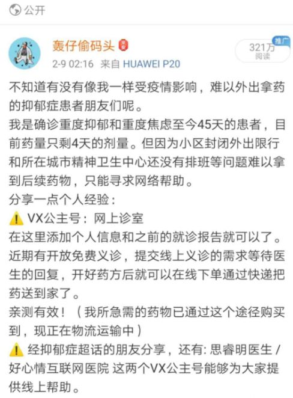

重度抑郁症患者断药后
原文链接 备份链接 “要是我能得肺炎就好了。”疫情围困，会让重度抑郁症患者产生一些可怕念头。断药威胁下，他们展开自救，并积极行动起来去援助处境更加凶险的病友。在“想死”和“好好活”之间，这些破碎的人一次次重建内心。 故事时间：2020 …

凌晨发出那条分享购药经验的微博后，轰仔当上了抑郁症病友的“志愿者”——借助网上医疗平台购药、转赠、远程代购等途径，帮病友们解决断药问题。“志愿者”不止她一个。他们通过微博、微信群互助购药，也彼此“取暖”。
全文4102字，阅读约需8分钟
“不知道有没有像我一样受疫情影响，难以外出拿药的抑郁症患者朋友们呢。”2月8日凌晨4时23分，轰仔仍然没有睡着。她掏出手机发了一条微博，把自己购药成功的经验分享给病友们。
疫情之下，全国多地封闭管理。湖北内外的近百心理、精神疾病患者，陆续发出求助声音。
从凌晨这条微博开始，轰仔当上了病友们的“志愿者”——借助网上医疗平台购药、互助转赠、远程代购等“自救”途径，帮助病友们解决断药问题。
“志愿者”不止她一个。多位患者通过微博、微信群互助购药，也彼此“取暖”。早些时候因关注疫情而陷入焦虑的轰仔，最近每天“忙得像996”，反而感觉充实多了。她说，做这些事情起码比发呆有意义。
国家卫健委2月18日的通知中，特别关注了封闭管理区居住的严重精神障碍患者，要求采取送药上门、远程医疗等方式，保障患者居家治疗。这意味着，双相情感障碍等严重精神障碍患者，或将率先得到更多“获救”渠道。

▲2月9日，轰仔发布微博分享了自己的线上购药经验。受访者供图
━━━━━
“停摆”的日常
距离第一次发病约一年半后，去年底，轰仔再次确诊重度抑郁、重度焦虑。她在外地上大学、就诊，过年回家时，本想在假期结束后回学校所在地复诊取药，但受疫情影响假期延长，余药不足。
2月初，她手中的抗抑郁药盐酸文拉法辛就只剩下了几天的药量，那时小区已经封闭限行，当地精神卫生中心精神科门诊近期也无排班，她于是选择网络求助。
由于精神类药物属处方药，一次通常不会开超过一个月的药量，且需要根据病情遵医嘱调整，此前患者都在相对固定的医院复诊、开药。
疫情发生后，许多抑郁症患者的日常“停摆”了。
2月5日，晓露通过微博发出求助。在她朋友的一个“病友群”中，也有38位来自武汉或周边地区的患者，依次讲述了自己的困境：
“刘某人，抑郁发作，因为新型病毒影响不能去武汉开药，加上县医院根本无法购买到精神类药物，已停药”；“徐某某，患心理疾病5年，因道路封闭，社区医院无精神类药物等原因，已被迫停药2天”；“王某，患双相情感障碍六年，因道路封闭无法开药已经停药”……
晓露对接的群里都是武汉及周边城市的患者，除了“封城封路封社区”导致的出行难，还有人因曾逗留武汉被隔离，被“封”在县城、村镇的患者则苦于身边医疗资源的匮乏，“几乎所有人都断药了”。
为了节省药物，有人选择自行减药，决定把剩下的药物掰成两半吃，延长服药时间。有人停药后出现戒断反应，头晕、头疼、胸闷是常见反应，严重者“头疼得像要裂开，吃止痛药也无法缓解”。还有人出现眼球刺痛感，“有点像触电”。
患者自主断药或减药，会面临很大的风险。
北京师范大学心理学部硕士生导师林钗华介绍，突然停止服用抗抑郁药物，很多患者会出现非常明显的焦虑症状，包括失眠、恐慌、噩梦等，然后可能会出现更严重的抑郁症状，甚至自杀意念，很大程度上会增加自杀的风险。
“双相情感障碍和中重度抑郁患者，遵医嘱服药是非常重要的，”林钗华说，“和开始服药时的适应过程相似，每个人停药的过程也有其独特性。不管是开始服药，还是逐渐减药，都需要在医生严格监控下进行。”
━━━━━
求助与分享
疫情的压力、求药的焦虑之下，患者们开始寻找“自救”的方法。
晓露和朋友的求助信，在微博、朋友圈等平台发出后，当天就收到很多反馈。病友们在回复中分享了不少网上医疗平台，有“好大夫”“1药网”“健客网上药房”“好心情互联网医院”等。
“开始收到求助信息时，都没往网上平台想，因为觉得大家肯定都试过了。”晓露说，没想到一下发现这么多平台可以使用。
轰仔的“成功经验”也很偶然。
翻看病历单时，轰仔无意间找到一张主治的二维码名片，扫码后发现上传病历和处方单就可以购药。2月7日早上7点多，轰仔提交了开药订单，11点左右用药审核通过。8日下午2点左右，订单显示“药品开始配送”。
购药成功后，轰仔在微博上分享了线上购药经验，并通过朋友帮忙转发扩散。“那天我去吃个饭回来，评论就多了一两百条。”
轰仔没想到会受到这么多关注：有人反映所需药物缺货，有的网上医疗平台快递不发湖北，还有网友表示愿意无偿赠药，部分平台也通过官博主动前来联系……两天后，这条微博的转发量超过了6000。
由于湖北地区患者反映的问题最集中复杂，轰仔和此前联系的一位武汉病友又组建了“疫区病友互助群”，通过私信、去微博“抑郁症超话”里找人等方式联系求助者，很快有来自武汉、黄冈、宜昌、仙桃、荆州等地的40余位患者进群。
收集病友需求、分享购药经验、对接平台客服……轰仔和晓露在这些病友中，承担起“志愿者”的工作。“我会把我能找到的所有渠道都发给求助的病友，也提倡大家把尝试成功的途径都发到群里，比如通过什么方法买到了哪些药、花了多长时间等等。”轰仔说。
晓露主要负责与不同渠道平台的沟通。经联络确认，湖北以外地区除少数二类精神药品之外，几大平台均可发货，且有平台即使没有处方，也可通过在线问诊由医生给出“用药建议”，经药师审核后开药。湖北当地，也有平台可以通过中国邮政EMS发货；发往武汉可以走顺丰绿色通道。
下单成功后，大家都松了一口气。
2月14日，早先下单的患者已有人反馈收到药。“其他人虽然还没收到药，但不那么焦虑了。”晓露说，此前群里求助的病友们大都反馈了好消息，“能买”。

▲晓露联络的“病友群”中，患者们排队讲述自己面临的断药问题。受访者供图
━━━━━
新一轮尝试
不久后，被寄予“厚望”的网上平台出现了新的状况。最近，晓露又被拉进了一个病友群，反馈集中在平台不发货，“有人下单9天都没发货，客服回答也很模糊”。
她联系之前沟通过的平台工作人员，得到的回复是，平台最近“爆单”了。
“我们已经调配20多人志愿服务运营部了，仓库的人都是24小时打包发货”，但订单“实在太多了”。工作人员解释，该平台有北京、温州、广州和徐州四个仓库，但只有徐州仓可以发往湖北，“是政府指定给湖北配送物资的专线，有时候徐州库房没货，只能从广州和温州顺丰调到徐州，再从徐州EMS给湖北。”
轰仔也遇到了类似情况，“有病友私信我说平台药房里的盐酸文拉法辛缺货了一天”，此外，还有一些管控较严的二类精神药物各平台都无法买到。
一些病友转向了其他尝试。
很多人选择了转赠药品。在轰仔身边，有人委托在医院工作的亲友邻居帮忙转交，“一手病历一手拿药”，也有很多愿意无偿赠药的朋友联系到有需要的患者，经病历或处方单、药盒等信息核实后，转寄给对方。“很多转赠人都是自付邮费的，我听说之后挺感动的。”轰仔说。
一位曾患抑郁、现已康复的重庆网友主动联系轰仔说可以帮大家买药。有来自湖北黄冈的患者在群里求助后，5天就收到了通过邮政快递送达的药物。根据病友们的反馈，这比平台到货的时间要短得多。身在武汉的群主，还把在医院开的药通过外卖“跑腿”服务寄给出门不便的同城群友。
晓露也遇到相似的例子。有一位湖北病友的药管制非常严格，在所有平台都买不到，最后通过网友联系到河南焦作一位精神科医生，把身份信息、诊断证明发给他，医生通过医院开了药，再通过邮政寄出。
为了尽快帮助更多人解决药物问题，轰仔每天要回复大量病友的留言，最长时一天回复七八个小时。每晚睡前，她都会看一遍私信，确认求助的病友们是否已收到货，跟他们聊聊天。
不久前，轰仔的群里也来了一位医生，这给了病友们很大信心。“之前大家像没头苍蝇一样找信息，现在可以直接跟医生对接咨询、开药，私人快递也可以比较快到达，我觉得这比很多安慰都更有用一些。”
━━━━━
“不要放弃”
疫情的持续，还给不少患者带来了新的心理困扰。
“和普通民众一样，已诊断的患者也会出现一些相似的应激反应。”林钗华说，外界的一些压力因素比如当前疫情带来的压力，很可能会影响患者的病情进展，甚至可能增加躁狂或是抑郁发作的几率。
基于此，不少专业团队也在通过远程心理咨询等方式提供帮助。自1月27日起，林钗华所在的北师大团队面向全国公众开通了疫情心理支持热线4001888976和网络辅导服务，接到大量来访者求助，其中因抑郁相关情绪来电的约占6%-7%，5%左右的人曾有过心理问题。
病友们这种焦虑，轰仔感同身受。
“有一些比较严重的患者来求助时特别焦虑，那种悲伤的情绪隔着屏幕都能感受到，我看到之后自己也比较触动，一下子有些受不了。”轰仔觉得，对于他们来说言语安慰其实非常贫瘠无力，就跟对方说“大家都在努力想办法，一定不要放弃”。
一些患者面临更为隐秘的问题。晓露在沟通中发现，一些病友因为心理疾病污名化甚至不愿透露自己的困境。
林钗华认为，这是患者们在求助过程中最大的障碍。她想要告诉他们，直面自己的困难并且及时求助，本身就是一种勇敢的表现。
东北的张童患抑郁障碍加焦虑症已有半年时间，“我最开始也不敢告诉家人病情，但是还是要面对。”张童认为家人还是比较理性的，“不要偷偷摸摸，还是要获得家人的支持。”
“我们所有人在不同时期都会经历不同的困扰。希望通过这次疫情，公众能意识到心理困扰的普遍性，让所有人都可以在需要的时候，及时地、勇敢地寻求专业的支持。”林钗华说。
━━━━━
“做些事情”
林钗华还发现，较多来访的确诊患者，一直没有服药或获得其他帮助，或只是短暂服药便自主停药、接受了一小段时间非持续的专业帮助，并没有得到非常好的康复。
“如果他们之前已经接受了很好的治疗和支持，可能反倒在这个过程中会体现出非常多的优势和资源，因为他们有很多的应对方式。”林钗华说。
她为抑郁症患者们提出了不少建议。
比如，留意导致自己出现心理状况的“触发事件”，一些“丧失”（指离异、亲人离世等）或是悲伤的事情。同时应留意一些征兆：比如抑郁患者可能发现自己会社交回避，双相患者可能睡眠突然减少，其他可能还包括食欲变化等等。
她建议，采取相应的行动，尽量减少一些可能诱发病情的风险因素，比如说保持惯常的睡眠习惯、更好地进行人际沟通，获取一些社会和家庭的支持，包括接受专业帮助等。
“我们越是不做什么，情绪可能就会变得越糟糕，不断地陷入抑郁的循环中。”林钗华建议，尽量安排一些让自己比较愉悦的活动改善情绪，也可以尝试一些认知的技术，有意识地识别和挑战自己的负面思维。
轰仔也清楚地感受到了这一点。
较早关注疫情的她，前些天一直处于焦虑中。她说，每天刷新闻越刷越难受，整个假期都过得比较差。最近,由于在网上和病友沟通求药，轰仔突然间“每天忙得像996”，反倒感觉充实一些。
“我以前可以躺在床上发呆几个小时，做这些事情起码比发呆有意义。”轰仔说。
（文中晓露、轰仔、张童均为化名）
*新京报记者 周依 编辑 陈思 校对 付春愔*
点击下图进入”全国新型冠状病毒感染肺炎实时地图“

*值班编辑 一碗鱼 吾彦祖*


本文未经新京报书面授权不得转载使用
欢迎朋友圈分享

原文链接 备份链接 “要是我能得肺炎就好了。”疫情围困，会让重度抑郁症患者产生一些可怕念头。断药威胁下，他们展开自救，并积极行动起来去援助处境更加凶险的病友。在“想死”和“好好活”之间，这些破碎的人一次次重建内心。 故事时间：2020 …
原文链接 备份链接 2020-02-25 21:54:22新京报 记者：杜雯雯 编辑：陈晓舒 2020-02-25 21:54:22新京报 记者：杜雯雯 我们上海公共卫生中心在1月5日提交正式的报告，从我们公共卫生的角度，我们的科学家、我 …
原文链接 备份链接 医院呼吁，并不危急的其他疾病患者，可以通过线上咨询、问诊，暂缓前往医院；但该看的病还是要去医院看，千万不要耽误治疗。 记者 | 周 洁 新冠肺炎疫情期间，其他疾病的病人怎么看病？记者连线上海各大医院发现，恢复门诊近一个 …
原文链接 备份链接 很多时候，流调人员不像医生，患者会主动尽可能多地给医生提供有用信息。流调人员说，希望市民在经历过疫情之后，能够了解到流调的重要性，为他们将来的工作提供更多便利。 记者 | 应 琛 当大家对新冠肺炎“零号病人”议论纷纷之 …
原文链接 备份链接 从2月7日到现在，一方面大家的活动越来越丰富，另一方面由于轻症患者比较多，人们病情都慢慢恢复。所以，我看到每个人脸上的笑容都变多了。 口述 | 余 毅 整理 | 王仲昀 这一个月终于要过去了。 2月21日上午，在等待几 …